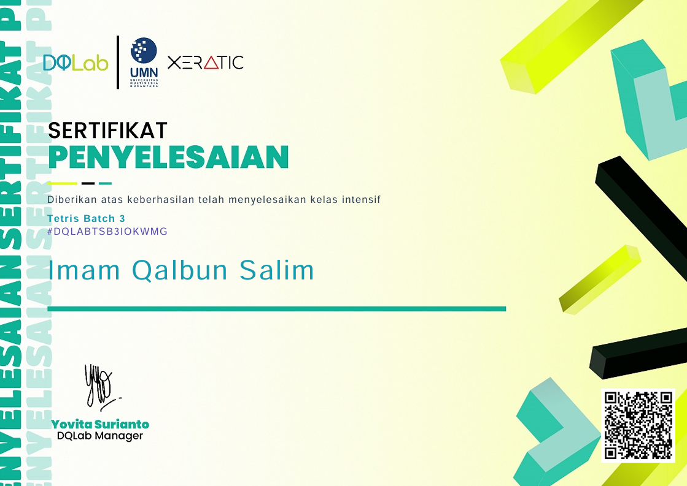
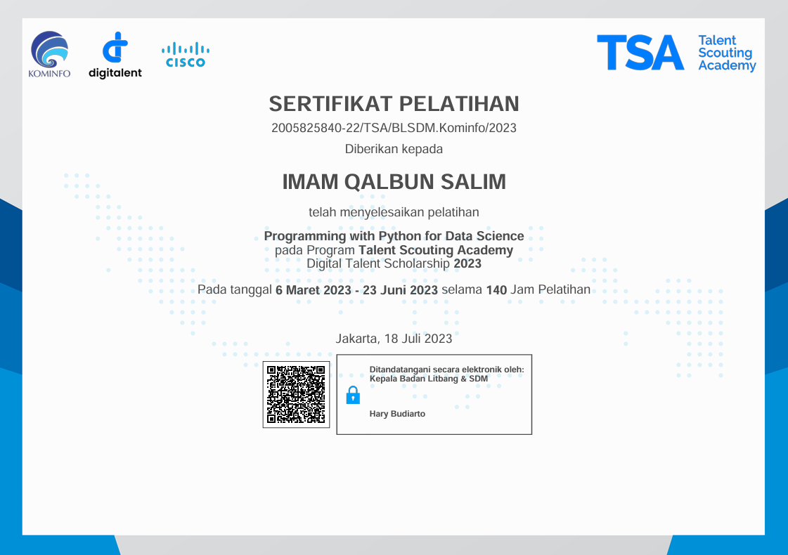

Certificates
Credentials That Define My Journey
.jpeg)
.jpeg)
.jpeg)
.jpeg)

Tetris Program Batch 3: Data Analytics Scholarship Awardee

I am a Junior Data Engineer passionate about designing and optimizing data pipelines. I have hands-on experience building reliable ETL workflows using Python, Pentaho Data Integration, and Apache Airflow. Proficient in SQL and database management, I bring a strong analytical mindset and interdisciplinary expertise gained through coursework and real-world projects. My approach to data engineering focuses on efficiency, scalability, and delivering impactful solutions.
Skills
Experience
Education / Courses
Showcases an ETL (Extract, Transform, Load) pipeline using Apache Airflow and AWS services (S3, Glue, Athena) to process employee data. The pipeline generates fake employee records, uploads them to AWS S3, runs an ETL job using AWS Glue, and queries the transformed data using AWS Athena.
Full ProjectShowcases an ETL (Extract, Transform, Load) pipeline using Apache Airflow. The pipeline processes web server log data, extracts relevant information, transforms the data, and loads it into a PostgreSQL database. This project aims to showcase how to orchestrate and automate data workflows using Airflow.
Full ProjectShowcases an ETL (Extract, Transform, Load) pipeline built using Apache Airflow and shell scripting to process toll data from various file formats. The pipeline extracts data from multiple sources, consolidates it into a single structured file, and transforms the data for uniformity.
Full ProjectConducted Exploratory Data Analysis using PostgreSQL, developed an interactive Tableau dashboard, and performed predictive modeling, including customer segmentation with K-Means clustering and time series forecasting using ARIMA.
Full ProjectAnalyzes Olist's e-commerce data using Python, MySQL, and Streamlit. Tasks include data importing, cleaning, joining, and exploratory analysis to reveal trends in customer behavior, top products, and payment preferences.
Full ProjectShowcases a movie data analysis project using Python. The project involves importing, cleaning (handling missing values, duplicates, and data types), and analyzing data. It highlights trends in movie genres, box office revenues, ratings, and audience preferences.
Full ProjectShowcases an analytics dashboard for Nyambi Design's August performance using Tableau. The project involves integrating and visualizing key metrics such as revenue, user engagement, and sales performance, highlighting trends in business growth, customer behavior, and operational efficiency
Full ProjectShowcases a Chicago crime analysis project using Python. The project involves importing, cleaning (renaming columns, handling data types, and feature labeling), and analyzing data. It highlights trends in crime rates, geographic hotspots, and variations across time periods
Full ProjectCredentials That Define My Journey
imammamqs@gmail.com
linkedin.com/in/imamqalbuns
github.com/boyerlindquist